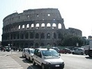

Colosseum
Colosseum, giant amphitheatre built in Rome under the Flavian emperors. Construction of the Colosseum was begun sometime between 70 and 72 CE during the reign of Vespasian. It is located just east of the Palatine Hill, on the grounds of what was Nero’s Golden House. The artificial lake that was the centrepiece of that palace complex was drained, and the Colosseum was sited there, a decision that was as much symbolic as it was practical. Vespasian, whose path to the throne had relatively humble beginnings, chose to replace the tyrannical emperor’s private lake with a public amphitheatre that could host tens of thousands of Romans. The structure was officially dedicated in 80 CE by Titus in a ceremony that included 100 days of games. Later, in 82 CE, Domitian completed the work by adding the uppermost story. Unlike earlier amphitheatres, which were nearly all dug into convenient hillsides for extra support, the Colosseum is a freestanding structure of stone and concrete, using a complex system of barrel vaults and groin vaults and measuring 620 by 513 feet (189 by 156 metres) overall. Three of the arena’s stories are encircled by arcades framed on the exterior by engaged columns in the Doric, Ionic, and Corinthian orders; the structure’s rising arrangement of columns became the basis of the Renaissance codification known as the assemblage of orders. The main structural framework and facade are travertine, the secondary walls are volcanic tufa, and the inner bowl and the arcade vaults are concrete.